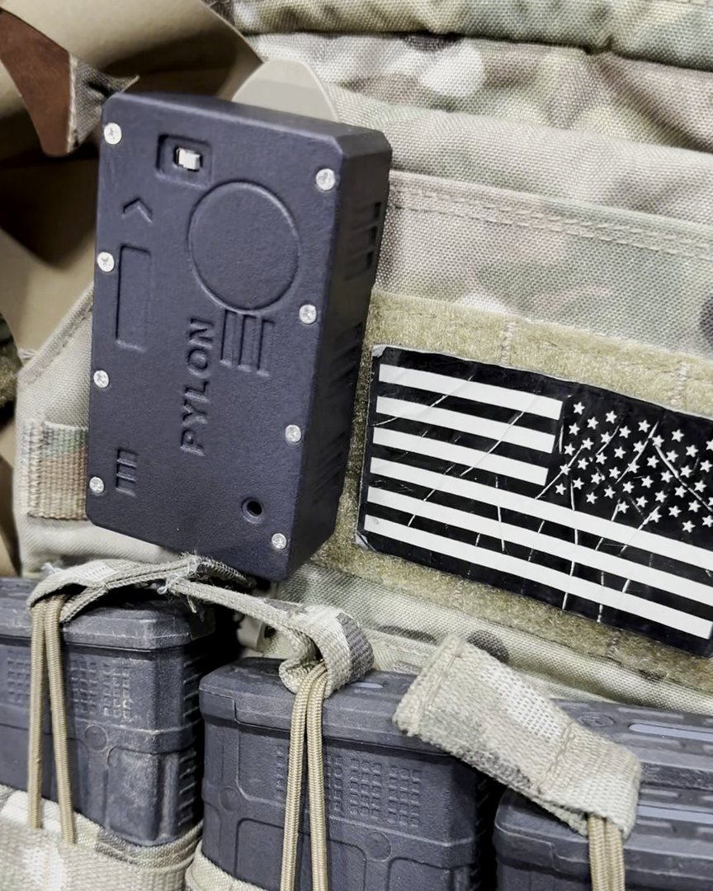

Every operator.
Every sensor.
Connected.
Harrow Defense puts the individual on the network: every operator, and every sensor they wear, visible to the leaders and the machines working for them. PYLON is where it starts.
The network ends at the leader. The mission doesn’t.
Drones, robots and AI-enabled command systems now act on data. Below the leader, position is a voice report and the sensors on each person’s body talk to nothing. The person the network cannot see is the person it cannot help. Harrow closes that gap.

Worn on the kit. Not carried in a hand.
PYLON is a small node issued to everyone on the team. It carries their position and the readings from the wearables they already have onto the map the unit already uses. No screen to watch, nothing to hold, nothing to leave behind.
Built, worn and on the map.
PYLON is the first product. The data layer is the company.
Every program on the battlefield is racing to put more sensors and more autonomy in the field. All of it works better when it knows where its people are and what condition they are in. That is the layer Harrow builds.
Hardware for every person
A body-worn node light and cheap enough to issue to everyone, not just the leader. Quiet by design, silent on command.
Software into TAK
We carry the sensors and wearables people already own onto the map their leaders already use, in the formats those systems already read.
Ready for autonomy
Machines can only work around people they can see. Position and condition for every person is the input that lets autonomous systems support a team instead of guessing at it.
Anyone who works where the network isn’t.
The dismounted warfighter comes first. Firefighters on a line, officers on a raid and rescuers in a collapse share the same problem: knowing where their people are and whether they are okay. The same layer serves all of them.
- Defense
- Law enforcement
- Wildland fire
- Search and rescue
- Mass casualty and HAZMAT
- Mining and industry
- Expeditions
Former Army Special Forces officer and White House Fellow. Led emerging hardware operations at Apple and defense and intelligence AI deployments at DataRobot, then served as COO of a defense electronics company fielding soldier-borne sensors.
Talk to us.
The deck, data sheet and technical brief go directly to investors, government customers and integration partners.
dan@harrowdefense.com